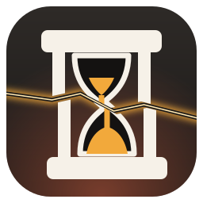
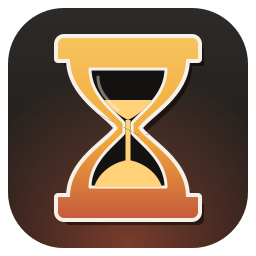
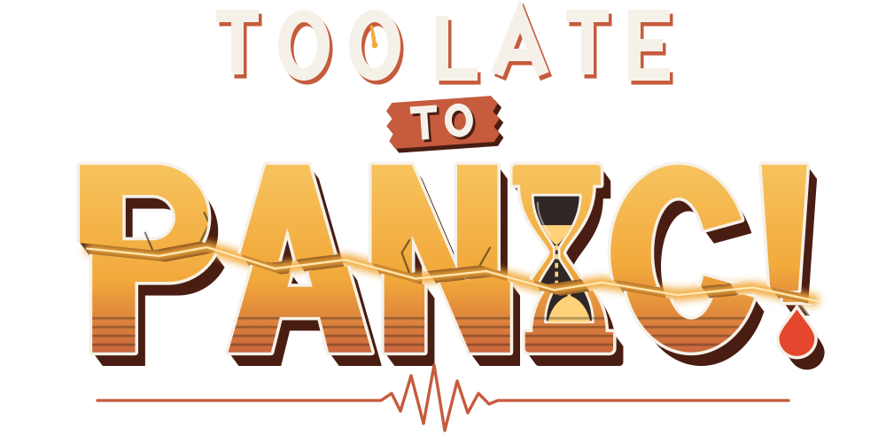
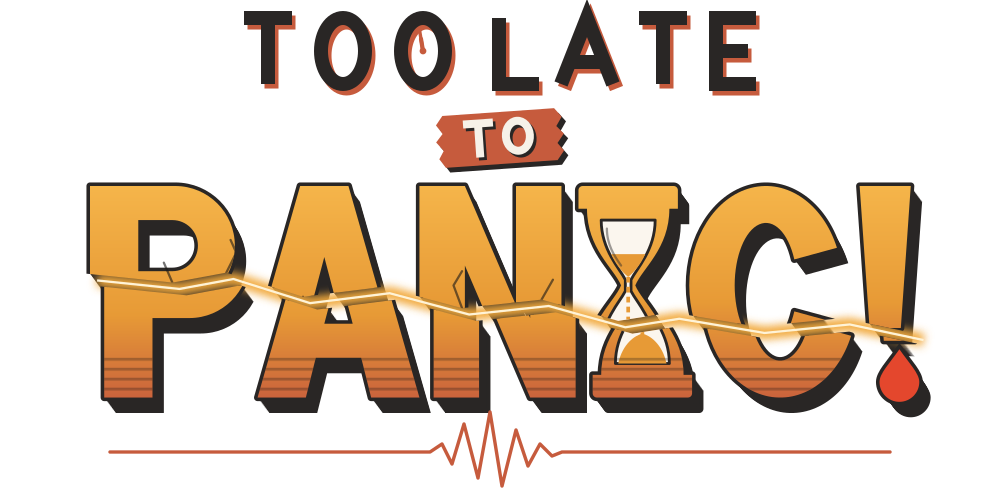
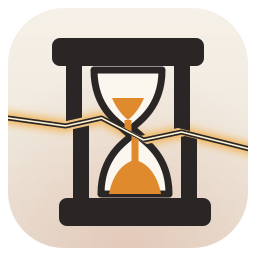
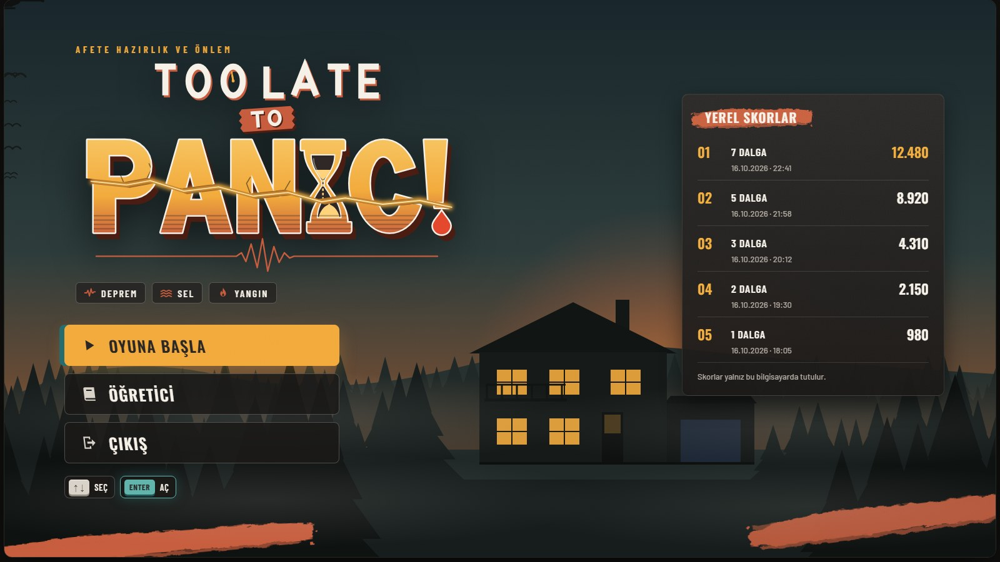

<title>Too Late to Panic! Logo</title>
<meta name="claude:viewport-fit-sides" content="cover">
<link rel="icon" href="logo/mark-small.svg">
<link rel="preconnect" href="https://fonts.googleapis.com">
<link rel="preconnect" href="https://fonts.gstatic.com" crossorigin>
<link href="https://fonts.googleapis.com/css2?family=Oswald:wght@500;600;700&family=Barlow+Condensed:wght@500;600;700&family=Barlow:wght@400;500;600&display=swap" rel="stylesheet">
<style>
:root{--cream:#F6F1E8;--ink:#292625;--deep:#1A1817;--teal:#256A6C;--teal-hi:#5FB3AA;--amber:#F2A93B;--rust:#C65B3D;--stone:#D8D2C8;--alarm:#E4472D;--muted:#A9A299;--line:rgba(216,210,200,.14);--ease:cubic-bezier(.2,.8,.2,1);--bg:#121110;color-scheme:dark;
  --noise:url("data:image/svg+xml;utf8,<svg xmlns='http://www.w3.org/2000/svg' width='180' height='180'><filter id='n'><feTurbulence type='fractalNoise' baseFrequency='.85' numOctaves='2' stitchTiles='stitch'/><feColorMatrix values='0 0 0 0 1  0 0 0 0 1  0 0 0 0 1  0 0 0 .55 0'/></filter><rect width='100%25' height='100%25' filter='url(%23n)'/></svg>")}
*{box-sizing:border-box;margin:0;padding:0}
html,body{background:var(--bg);color:var(--cream);overflow-x:hidden}
body{font-family:Barlow,'Barlow Condensed',system-ui,sans-serif;font-size:16px}
a{color:inherit}
.bar{position:sticky;top:env(safe-area-inset-top,0px);z-index:20;display:flex;flex-wrap:wrap;align-items:center;gap:10px 16px;padding-block:10px;padding-left:max(16px,env(safe-area-inset-left,0px));padding-right:max(16px,env(safe-area-inset-right,0px));background:rgba(18,17,16,.94);backdrop-filter:blur(8px);border-bottom:1px solid var(--line)}
.bar img{width:30px;height:30px}
.bar b{font:600 18px Oswald;letter-spacing:.04em}
.bar nav{margin-left:auto;display:flex;gap:6px;flex-wrap:wrap}
.bar nav a{font:600 14px 'Barlow Condensed';letter-spacing:.08em;text-transform:uppercase;text-decoration:none;color:var(--stone);border:1px solid var(--line);padding:6px 10px;border-radius:6px}
.bar nav a:hover{border-color:var(--amber);color:var(--cream)}

.hero{position:relative;display:grid;place-items:center;overflow:hidden;padding-block:56px 0;padding-left:max(16px,env(safe-area-inset-left,0px));padding-right:max(16px,env(safe-area-inset-right,0px));
  background:radial-gradient(ellipse 70% 55% at 50% 72%,rgba(198,91,61,.38),transparent 70%),radial-gradient(ellipse 90% 70% at 50% 110%,rgba(242,169,59,.22),transparent 70%),linear-gradient(180deg,#151413,#1d1a18 60%,#241a15)}
.hero::after{content:'';position:absolute;inset:0;background-image:var(--noise);opacity:.08;mix-blend-mode:overlay;pointer-events:none}
#embers{position:absolute;inset:0;width:100%;height:100%;pointer-events:none}
.hero .pines{position:absolute;left:0;right:0;bottom:0;width:100%;height:220px;pointer-events:none}
.hero .wrap{position:relative;z-index:2;width:min(1100px,92vw);padding:40px 0 120px}
#hero-logo svg{width:100%;height:auto;display:block;overflow:visible}
.hero .kick{text-align:center;font:700 15px 'Barlow Condensed';letter-spacing:.34em;color:var(--amber);margin-top:6px}
.replay{position:absolute;right:max(20px,env(safe-area-inset-right,0px));bottom:20px;z-index:3;display:flex;gap:8px}
.replay button{font:600 14px 'Barlow Condensed';letter-spacing:.1em;color:var(--cream);background:rgba(26,24,23,.8);border:1px solid var(--line);border-radius:6px;padding:8px 14px;cursor:pointer}
.replay button:hover{border-color:var(--amber)}

/* ---- logo intro animation (classes come from build_logo.py) ---- */
.anim .row1{animation:rowIn .9s var(--ease) both .1s}
.anim .badge{transform-box:fill-box;transform-origin:center;animation:popIn .6s cubic-bezier(.3,1.7,.5,1) both .55s}
.anim .panic{animation:slam .7s cubic-bezier(.3,1.35,.5,1) both .8s}
.anim .panic .lower{animation:shear .5s cubic-bezier(.5,0,.2,1.4) both 1.45s}
.anim .fissure{animation:fissureIn .6s ease both 1.5s,flicker 2.4s ease-in-out infinite 2.2s}
.anim .fissure-core{animation:fissureIn .6s ease both 1.5s}
.anim .seismo{stroke-dasharray:1500;stroke-dashoffset:1500;animation:draw 1.6s ease-out forwards 1.9s}
.anim .hg .sand-stream{animation:stream .5s linear infinite}
.anim .panic .drop{transform-box:fill-box;transform-origin:center top;animation:drip 2.2s cubic-bezier(.5,0,.8,.4) infinite 2s}
.anim .clock .hand-m{transform-box:fill-box;transform-origin:100% 100%;animation:tickTock 2s steps(1) infinite 2s}
@keyframes rowIn{from{opacity:0;translate:0 -18px}to{opacity:1;translate:0 0}}
@keyframes popIn{from{opacity:0;scale:.2;rotate:-45deg}to{opacity:1;scale:1;rotate:0deg}}
@keyframes slam{0%{opacity:0;transform:translate(90px,226px) scale(1.9) translate(-140px,-40px)}100%{opacity:1;transform:translate(90px,226px) scale(1.42)}}
@keyframes shear{from{transform:translate(0,0)}to{transform:translate(10px,9px)}}
@keyframes fissureIn{from{opacity:0}to{opacity:1}}
@keyframes flicker{0%,100%{opacity:1}40%{opacity:.55}55%{opacity:.9}70%{opacity:.6}}
@keyframes draw{to{stroke-dashoffset:0}}
@keyframes stream{to{stroke-dashoffset:-6}}
@keyframes drip{0%,55%{translate:0 -6px;scale:.4;opacity:0}65%{opacity:1;translate:0 0;scale:1}90%{opacity:1;translate:0 8px;scale:1 1.08}100%{opacity:0;translate:0 14px}}
@keyframes tickTock{0%{rotate:0deg}50%{rotate:6deg}}
.shake{animation:quake .5s linear 1.45s}
@keyframes quake{0%,100%{transform:none}20%{transform:translate(-6px,3px)}40%{transform:translate(5px,-3px)}60%{transform:translate(-3px,2px)}80%{transform:translate(3px,1px)}}

section.blk{max-width:1212px;margin:0 auto;padding-block:56px 0;padding-left:max(16px,env(safe-area-inset-left,0px));padding-right:max(16px,env(safe-area-inset-right,0px))}
h2{font:600 30px Oswald,sans-serif;letter-spacing:.03em;text-wrap:balance}
h2 small{font:600 13px 'Barlow Condensed';letter-spacing:.18em;color:var(--muted);margin-left:10px}
.lead{color:var(--stone);margin-top:8px;max-width:66ch;line-height:1.55;overflow-wrap:anywhere}
.rule li{min-width:0}
.rule li code{overflow-wrap:anywhere;white-space:normal}
.ideas{display:grid;grid-template-columns:repeat(auto-fit,minmax(min(200px,100%),1fr));gap:14px;margin-top:22px}
.idea{position:relative;padding:18px;border:1px solid var(--line);border-radius:12px;background:linear-gradient(180deg,#24211f,#1a1817);overflow:hidden}
.idea svg.ic{width:64px;height:64px;display:block;margin-bottom:12px}
.idea h3{font:600 20px Oswald;letter-spacing:.03em}
.idea p{color:var(--stone);font-size:15px;line-height:1.5;margin-top:6px}
.idea .tag{position:absolute;top:16px;right:16px;font:700 11px 'Barlow Condensed';letter-spacing:.16em;color:var(--amber)}

.grid{display:grid;grid-template-columns:repeat(auto-fit,minmax(min(340px,100%),1fr));gap:14px;margin-top:22px}
.tile{border-radius:12px;overflow:hidden;border:1px solid var(--line)}
.tile .art{display:grid;place-items:center;padding:34px 28px;min-height:250px}
.tile .art img{width:100%;max-width:520px;height:auto}
.tile .cap{display:flex;justify-content:space-between;align-items:center;gap:10px;padding:10px 14px;background:#1a1817;font:600 14px 'Barlow Condensed';letter-spacing:.08em}
.tile .cap span{color:var(--muted);font:500 13px Barlow;letter-spacing:0}
.tile .cap a{color:var(--amber);text-decoration:none}
.on-dark{background:radial-gradient(ellipse at 50% 70%,#2a211c,#151413)}
.on-cream{background:#F6F1E8}
.on-rust{background:#C65B3D}
.on-teal{background:#1f5a5c}
.marks{display:flex;align-items:flex-end;gap:26px;flex-wrap:wrap}
.marks img{display:block}
.marks figure{display:flex;flex-direction:column;align-items:center;gap:8px}
.marks figcaption{font:600 12px 'Barlow Condensed';letter-spacing:.12em;color:var(--muted)}

.ctx{position:relative;margin-top:22px;border-radius:14px;overflow:hidden;border:1px solid var(--line);aspect-ratio:16/9;background:#000 url(img/bg-rescue.jpg) center/cover}
.ctx::before{content:'';position:absolute;inset:0;background:linear-gradient(180deg,rgba(20,18,17,.45),rgba(20,18,17,.25) 40%,rgba(20,18,17,.85))}
.ctx img{position:absolute;left:50%;top:46%;width:56%;transform:translate(-50%,-50%);filter:drop-shadow(0 20px 40px rgba(0,0,0,.6))}
.ctx .press{position:absolute;left:0;right:0;bottom:7%;text-align:center;font:600 clamp(12px,1.6vw,20px) 'Barlow Condensed';letter-spacing:.3em;color:var(--stone);animation:blink 1.6s ease-in-out infinite}
.ctx .press b{display:inline-block;background:var(--stone);color:var(--ink);border-radius:4px;padding:0 8px;margin:0 6px;box-shadow:0 3px 0 #8E877D}
@keyframes blink{50%{opacity:.35}}

.rules{display:grid;grid-template-columns:repeat(auto-fit,minmax(min(260px,100%),1fr));gap:14px;margin-top:22px}
.rule{padding:16px;border-radius:12px;border:1px solid var(--line);background:#1a1817}
.rule h3{font:600 14px 'Barlow Condensed';letter-spacing:.16em;color:var(--amber)}
.rule ul{list-style:none;margin-top:8px}
.rule li{padding:6px 0;border-bottom:1px solid var(--line);font-size:14.5px;color:var(--stone);display:flex;justify-content:space-between;gap:12px}
.rule li:last-child{border-bottom:0}
.rule li code{white-space:nowrap;font:500 12.5px ui-monospace,Consolas,monospace;color:var(--teal-hi)}
.rule li a{color:var(--teal-hi)}
footer{max-width:1212px;margin:56px auto 40px;padding-block:0;padding-left:max(16px,env(safe-area-inset-left,0px));padding-right:max(16px,env(safe-area-inset-right,0px));color:var(--muted);font-size:13.5px}
@media (prefers-reduced-motion:reduce){*,*::before,*::after{animation:none !important}}
a:focus-visible,button:focus-visible{outline:2px solid var(--amber);outline-offset:2px}
.shot{display:block;margin-top:22px;border-radius:14px;overflow:hidden;border:1px solid var(--line)}
.shot img{display:block;width:100%;height:auto}
.shot-cap{display:flex;justify-content:space-between;gap:12px;flex-wrap:wrap;margin-top:10px;color:var(--muted);font-size:14px}
.shot-cap a{color:var(--amber)}
</style>
<header class="bar">
  
  <b>TOO LATE TO PANIC! · LOGO</b>
  <nav><a href="#fikir">Fikir</a><a href="#ilkeler">İlkeler</a><a href="#varyant">Varyantlar</a><a href="#oyun">Oyunda</a><a href="#kullanim">Kullanım</a><a href="index.html#title">HUD</a></nav>
</header>

<section class="hero" id="hero">
  <canvas id="embers"></canvas>
  <svg class="pines" id="pines" viewBox="0 0 1600 220" preserveAspectRatio="xMidYMax slice"></svg>
  <div class="wrap">
    <div id="hero-logo" class="anim" aria-label="Too Late to Panic! logosu"></div>
    <div class="kick">AFETE HAZIRLIK VE ÖNLEM</div>
  </div>
  <div class="replay"><button id="replay">TEKRAR OYNAT</button></div>
</section>

<section class="blk" id="fikir">
  <h2>Fikir <small>ÜÇ AFET, BİR KELİME</small></h2>
  <p class="lead">Hazır bir yazı tipi kullanılmadı; bütün harfler logo için çizildi. Ana fikir, "PANIC" içindeki I harfinin yerine kumu bitmek üzere olan bir kum saatinin geçmesi. Deprem, sel ve yangın harflerin içine işlendi.</p>
  <div class="ideas">
    <div class="idea"><span class="tag">ZAMAN</span>
      <svg class="ic" viewBox="40 30 176 196"><path d="M60 38H196A8 8 0 0 1 204 46V58A8 8 0 0 1 196 66H60A8 8 0 0 1 52 58V46A8 8 0 0 1 60 38ZM60 190H196A8 8 0 0 1 204 198V210A8 8 0 0 1 196 218H60A8 8 0 0 1 52 210V198A8 8 0 0 1 60 190ZM66 66H82V190H66ZM174 66H190V190H174Z" fill="#F6F1E8"/><path d="M94 70H162C162 108 138 122 132 128C138 134 162 148 162 186H94C94 148 118 134 124 128C118 122 94 108 94 70Z" fill="#141211" stroke="#F6F1E8" stroke-width="7"/><path d="M112 98H144C140 108 133 116 128 120C123 116 116 108 112 98ZM102 186C106 164 118 154 128 152C138 154 150 164 154 186Z" fill="#F2A93B"/><rect x="124.5" y="120" width="7" height="44" fill="#F2A93B"/></svg>
      <h3>Kum saati I</h3><p>I harfi doğrudan bir kum saati: kapaklar, belde daralan iki hazne ve koyu cam. Üstte birkaç tane kum kaldı; fay onu da kırar. Ünlemin noktası düşen bir damla.</p></div>
    <div class="idea"><span class="tag">DEPREM</span>
      <svg class="ic" viewBox="0 0 64 64"><path d="M4 8H44V32L4 40Z" fill="#F2A93B"/><path d="M10 46L50 38V58H10Z" fill="#C65B3D"/><path d="M0 40L60 28" stroke="#F2A93B" stroke-width="3" opacity=".6"/></svg>
      <h3>Fay kırığı</h3><p>"PANIC!" çapraz bir fay hattında ikiye ayrılır, alt yarı kayar. Aradaki çatlaktan sıcak bir ışık sızar.</p></div>
    <div class="idea"><span class="tag">SEL</span>
      <svg class="ic" viewBox="0 0 64 64"><rect x="8" y="6" width="48" height="52" fill="#C65B3D"/><g fill="#1A1817" opacity=".45"><rect x="8" y="38" width="48" height="3"/><rect x="8" y="45" width="48" height="3"/><rect x="8" y="52" width="48" height="3"/></g></svg>
      <h3>Su seviyesi</h3><p>Harflerin alt bandındaki çizgiler yükselen suyu gösterir; logo küçüldüğünde doku olarak okunur.</p></div>
    <div class="idea"><span class="tag">YANGIN</span>
      <svg class="ic" viewBox="0 0 64 64"><defs><linearGradient id="hgr" x1="0" y1="0" x2="0" y2="1"><stop offset="0" stop-color="#F7C35E"/><stop offset=".55" stop-color="#F2A93B"/><stop offset="1" stop-color="#C65B3D"/></linearGradient></defs><rect x="8" y="6" width="48" height="52" rx="2" fill="url(#hgr)"/></svg>
      <h3>Isı gradyanı</h3><p>Yüzey amberden pasa ısınır; koyu kahve derinlik ve krem kontur, oyunun HUD paletinden gelir.</p></div>
    <div class="idea"><span class="tag">ŞIK DOKUNUŞ</span>
      <svg class="ic" viewBox="0 0 64 64"><ellipse cx="34" cy="34" rx="15" ry="22" fill="none" stroke="#C65B3D" stroke-width="10"/><ellipse cx="31" cy="30" rx="15" ry="22" fill="none" stroke="#F6F1E8" stroke-width="10"/><path d="M31 30L29 15" stroke="#F2A93B" stroke-width="3" stroke-linecap="round"/></svg>
      <h3>Kalın deco üst satır</h3><p>"TOO LATE" kalın, dolu harfler ve pas gölgeyle yazılı; ikinci O, 23:59'u gösteren bir saat. "TO" yırtık bir uyarı şeridinin üstünde, hafif eğik.</p></div>
  </div>
</section>

<section class="blk" id="ilkeler">
  <h2>İlkeler <small>ARAŞTIRMA → UYGULAMA</small></h2>
  <p class="lead">Amblem, platform ikon rehberleri ve logo tasarımı kaynaklarındaki ortak kurallara göre baştan çizildi. Önceki kadranlı mühür; çizgi, çatlak, dalga, alev, damla ve kum saatini aynı anda taşıyordu ve küçük boyutta okunmuyordu.</p>
  <div class="rules">
    <div class="rule"><h3>TEK ODAK</h3><ul><li>En fazla iki metafor</li><li>Kum saati + fay kırığı</li></ul></div>
    <div class="rule"><h3>DOLU ŞEKİL</h3><ul><li>İnce çizgi yok</li><li>Kalın kapak ve direkler</li></ul></div>
    <div class="rule"><h3>16 PX TESTİ</h3><ul><li>16–32 px için sade varyant</li><li><code>mark-small.svg</code>, çatlaksız</li></ul></div>
    <div class="rule"><h3>TEK RENK / GRİ</h3><ul><li>Tek renk ve gri tonda sınandı</li><li>Saydam zeminli logo dosyası</li></ul></div>
  </div>
  <div class="tile" style="margin-top:14px"><div class="art on-dark" style="min-height:0"><div class="marks">
    <figure><figcaption>128</figcaption></figure>
    <figure><figcaption>64</figcaption></figure>
    <figure><figcaption>48</figcaption></figure>
    <figure><figcaption>32</figcaption></figure>
    <figure><figcaption>24</figcaption></figure>
    <figure><figcaption>16</figcaption></figure>
    <figure><figcaption>GRİ</figcaption></figure>
    <figure><figcaption>TEK RENK</figcaption></figure>
  </div></div><div class="cap">KÜÇÜK BOYUT VE KONTRAST TESTİ <span>16–32 px'te çatlaksız varyant</span></div></div>
</section>

<section class="blk" id="varyant">
  <h2>Varyantlar <small>SVG + PNG</small></h2>
  <p class="lead">Dosyalar projede <code>TooLateToPanic/Documentation/HUD-Concept/logo/</code> altında; PNG'ler saydam zeminli.</p>
  <div class="grid">
    <div class="tile"><div class="art on-dark"></div><div class="cap">ANA · KOYU ZEMİN <span>logo.svg · logo-2000.png</span></div></div>
    <div class="tile"><div class="art on-cream"></div><div class="cap">AÇIK ZEMİN <span>logo-light.svg · logo-light-2000.png</span></div></div>
    <div class="tile"><div class="art on-rust"></div><div class="cap">TEK RENK · PAS <span>logo-mono.svg · logo-mono-2000.png</span></div></div>
    <div class="tile"><div class="art on-teal"></div><div class="cap">TEK RENK · PETROL <span>Baskı, tek renk damga</span></div></div>
    <div class="tile"><div class="art on-dark"><div class="marks">
      <figure><figcaption>KOYU</figcaption></figure>
      <figure><figcaption>AÇIK</figcaption></figure>
    </div></div><div class="cap">AMBLEM · SİMGE, EXE İKONU <span>mark.svg · mark-512.png · mark-light-512.png</span></div></div>
    <div class="tile"><div class="art on-rust"></div><div class="cap">AMBLEM · TEK RENK <span>mark-mono.svg · mark-mono-512.png</span></div></div>
  </div>
</section>

<section class="blk" id="oyun">
  <h2>Oyunda <small>AÇILIŞ EKRANI</small></h2>
  <p class="lead">Üstte gerçek oyun karesi (kurtarma helikopteri ve hasar görmüş ev) üzerinde açılış ekranı denemesi; altta HUD konseptindeki başlık ekranı.</p>
  <div class="ctx"><div class="press">DEVAM ETMEK İÇİN <b>ENTER</b></div></div>
  <a class="shot" href="index.html#title"></a>
  <div class="shot-cap"><span>HUD konseptinin başlık ekranı, 1600×900 oyun canvas'ı.</span><a href="index.html#title">HUD prototipini aç →</a></div>
</section>

<section class="blk" id="kullanim">
  <h2>Kullanım <small>KISA KURALLAR</small></h2>
  <div class="rules">
    <div class="rule"><h3>BOYUT VE BOŞLUK</h3><ul>
      <li>En küçük ana logo <code>240 px</code></li><li>Amblem 48 px ve üstü <code>mark.svg</code></li><li>16–32 px <code>mark-small.svg</code></li><li>Çevre boşluğu <code>"P" harfinin yarısı</code></li></ul></div>
    <div class="rule"><h3>YAPMA</h3><ul>
      <li>Fay kırığını düzeltme veya kaydırmayı büyütme</li><li>Kum saatini düz I ile değiştirme</li><li>Gradyanı başka renklere boyama</li></ul></div>
    <div class="rule"><h3>DOSYALAR</h3><ul>
      <li>Üretici <code>logo/build_logo.py</code></li><li>Vektör <code>logo/*.svg</code></li><li>Saydam PNG <code>logo/png/</code></li></ul></div>
  </div>
</section>
<footer>Tüm harfler bu proje için çizildi; yazı tipi lisansı gerektirmez. Renkler HUD paletiyle aynı: krem #F6F1E8, kömür #292625, petrol #256A6C, amber #F2A93B, pas #C65B3D, alarm #E4472D.</footer>

<script>
(async () => {
  const host = document.getElementById('hero-logo');
  host.innerHTML = await (await fetch('logo/logo.svg')).text();
  const replay = () => { host.classList.remove('anim','shake'); void host.offsetWidth; host.classList.add('anim','shake'); };
  document.getElementById('replay').onclick = replay;

  // pine silhouettes
  const rng = s => () => (s = s * 16807 % 2147483647, (s - 1) / 2147483646);
  const pines = (seed, base, h0, h1, g0, g1) => { const r = rng(seed); let d = ''; for (let x = -40; x < 1660; x += g0 + r() * (g1 - g0)) { const h = h0 + r() * (h1 - h0), w = h * .4; for (let t = 0; t < 4; t++) { const top = base - h + t * h * .2, bot = top + h * .42, hw = w * (.3 + t * .24); d += `M${x} ${top}L${x + hw} ${bot}L${x - hw} ${bot}Z`; } } return d; };
  document.getElementById('pines').innerHTML = `<path d="${pines(5,200,60,130,18,36)}" fill="#1b1817"/><rect y="196" width="1600" height="30" fill="#1b1817"/><path d="${pines(9,230,110,200,36,70)}" fill="#100e0d"/>`;

  // embers
  const cv = document.getElementById('embers'), cx = cv.getContext('2d'); let W, H, P = [];
  const fit = () => { W = cv.width = cv.offsetWidth; H = cv.height = cv.offsetHeight; };
  fit(); addEventListener('resize', fit);
  const mk = init => ({ x: Math.random() * W, y: init ? Math.random() * H : H + 10, vy: -(.4 + Math.random() * 1.2), s: 1 + Math.random() * 2.4, p: Math.random() * 6, c: Math.random() < .5 ? '242,169,59' : '228,71,45' });
  for (let i = 0; i < 70; i++) P.push(mk(true));
  const still = matchMedia('(prefers-reduced-motion: reduce)').matches;
  (function loop() {
    cx.clearRect(0, 0, W, H);
    for (let i = 0; i < P.length; i++) { const p = P[i]; p.p += .03; p.x += Math.sin(p.p) * .5; p.y += p.vy; if (p.y < -10) P[i] = mk(false);
      const a = Math.min(1, p.y / H * 1.4) * (.5 + .5 * Math.sin(p.p * 3));
      cx.fillStyle = `rgba(${p.c},${Math.max(0, a).toFixed(3)})`; cx.beginPath(); cx.arc(p.x, p.y, p.s, 0, 6.283); cx.fill(); }
    if (!still) requestAnimationFrame(loop);
  })();
})();
</script>
